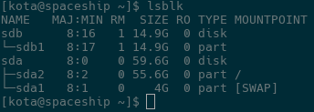
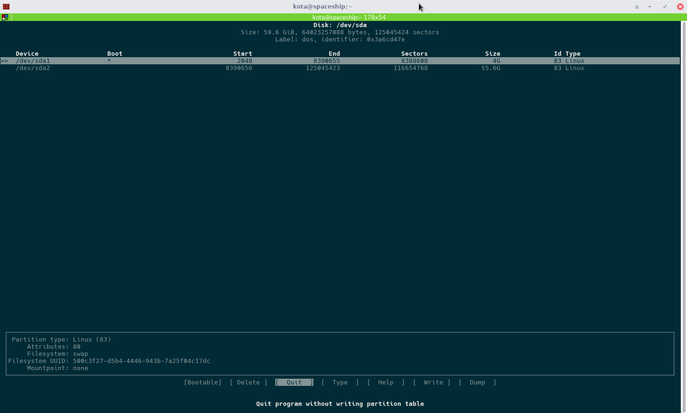

This is not meant to be a beginner tutorial, but simply a quick guide to keep and avoid missing any steps. If you are a beginner check out the arch wiki's install guide and ask people on the forums if you have any questions, also best of luck with your adventure.
Things this guide assumes:- - You have a working computer (either 1686 or x86_64)
- - You have a working internet connection via ethernet (wifi installs are a bit of a bitch check the wiki)
- - You have a flash-drive or disc with arch install media on it (get a torrent from the site here)
- - You aren't spooked by a terminal
- - Your gender
Getting Started:
Plug in your flash drive and get your computer to
it bios or to some kind of quick boot menu. Then by either changing
your boot order or by selecting your flash-drive/disc-drive in the
menu get your computer to load arch's install media.
You'll be presented with a few options but all you need to do is select the install one. If there are two options for install that means you have a 64 bit computer which is great welcome to the 21st century. Just pick the one that says x86_64 and you're good to go.
A bunch of text and shit will scroll by (show it off to your friend so they think you're a 1337 H4x0r) and then it'll auto log you in.
The first thing you want to do is make sure your ethernet cable and setup is all working by pinging am online website.
ping www.google.com
if it says something like host not found you're fucked, otherwise press Ctrl + C to end the ping.
Now we need set-up and format the hard-drives partitions.
lsblk
Your output will look sorta similar the above picture. If you only have one hard-drive like in the above picture you'll see two devices. The larger one (sda) being your hard-drive and the smaller one (sdb) being the install flash-drive. The order and names may be different on your computer so make sure you find out which drive is the hard-drive you want to install arch on for use in the next command.
cfdisk /dev/sda
I took this screenshot on my already installed and working computer so as you'll see there are two partitions. The first one I use for swap and the other one if used for everything else. What you'll want to do is go through and delete all of your partitions by selecting delete on them. Then make a new one and and when asked the size type in double whatever your ram is. For me that was only 4G. Then hit enter a few times and make another partition. You don't need to change the size on the second one since the default value will already be the rest of your hard-drive.
Make sure you navigate over and select bootable for the second partition. Then move over and select write and finally quit once you're all done.
Assuming your partitions and drives are named the same as mine you can go ahead and enter all the following commands to partition your drive and enable your swap.
mkfs.ext4 /dev/sda2
mkswap /dev/sda1
swapon /dev/sda1
mount /dev/sda2 /mnt
Next we will tweak your mirror list so that you have the fastest mirrors for your location before we start the install.
cp /etc/pacman.d/mirrorlist /etc/pacman.d/mirrorlist.backup
rankmirrors -n 6 /etc/pacman.d/mirrorlist.backup > /etc/pacman.d/mirrorlist
That second command will take a long ass time to complete so go have some coffee and shit in the mean time. Once it's done we can install all the packages that make up arch linux.
pacstrap -i /mnt base base-devel
It will prompt you twice at the beginning making sure you actually want to install everything. Just press Y twice and sit back and relax.
Once that's all done we need to generate an fstab file. (I usually check to make sure it works with nano quick afterwards but it's not necessary)
genfstab -U /mnt > /mnt/etc/fstab
Now we change our root to the new install and off of the flash-drive
arch-chroot /mnt
The prompt will change a bit if it worked and that means we need to set-up the boring shit like location and time.
nano /etc/locale.gen
Just uncomment (by removing the octothorpes at the beggining of the line) the two two English ones (en.US)
Then we enable them.
locale-gen
Moving on we need to set the time zone our computer will be using. If you happen to be on the east coast of the US just enter the command below. If not hit tab a bunch of times while typing your location or just look it up on the wiki.
ln -s /usr/share/zoneinfo/America/New_York /etc/localtime
hwclock --systohc
Now we can set the computers name. This is the hardest part of any programmers job so choose carefully as it's kinda a bitch to change later and you'll see it every time you use a terminal.
echo computernamehere > /etc/hostname
Now you probably want to be able to actually boot into your fresh (as fuck) new install. To do that we need a boot mamanger. Grub will suffice although if you're not lazy like me maybe check out reEFInd which can be made to look pretty fucking awesome.
{kind=link}
{kind=link}
pacman -S grub-bios
grub-install /dev/sda
mkinitcpio -p linux
grub-mkconfig -o /boot/grub/grub.cfg
Alright good news we're almost done. We're gonna reboot onto our main hard-drive and make sure everything worked correctly. If it didn't I'd recommend crying a bit and making a blood sacrifice to the linux gods before trying again.
exit
umount /mnt
reboot
Once it turns back on login to root and it's about damn time we set a password.
passwd
Now do yourself a favor and make sure it's a half decent password since it's for root and all. Check that it's not in the top 10 million passwords and also make it at least 8 characters so you don't get brute forced by some kiddie.
The last thing we want to do is make the ethernet port actually work by starting the dhcpcd service.
dhcpcd
ping www.google.com
systemctl enable dhcpcd
shutdown -P -h now
Alright that wraps it up you now have a fully working arch linux install that can be used as a fancy desktop or a lightweight and always extremely up to date server. I might even get around to adding some tutorials for all the cool shit you can do and maybe a few desktop environments.
- Kota